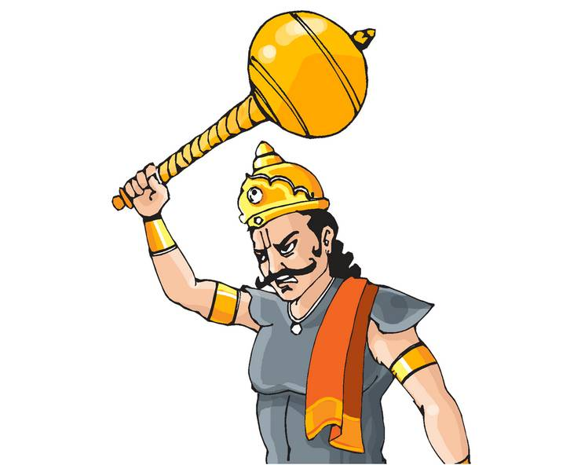
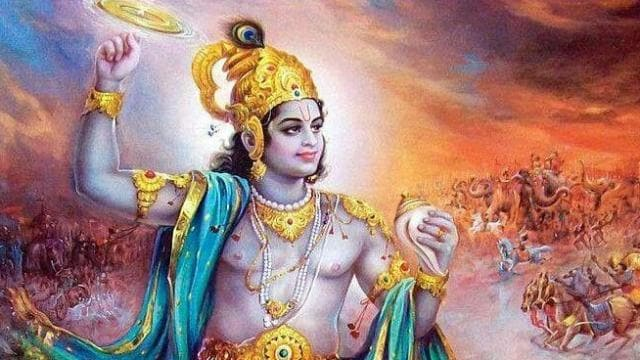
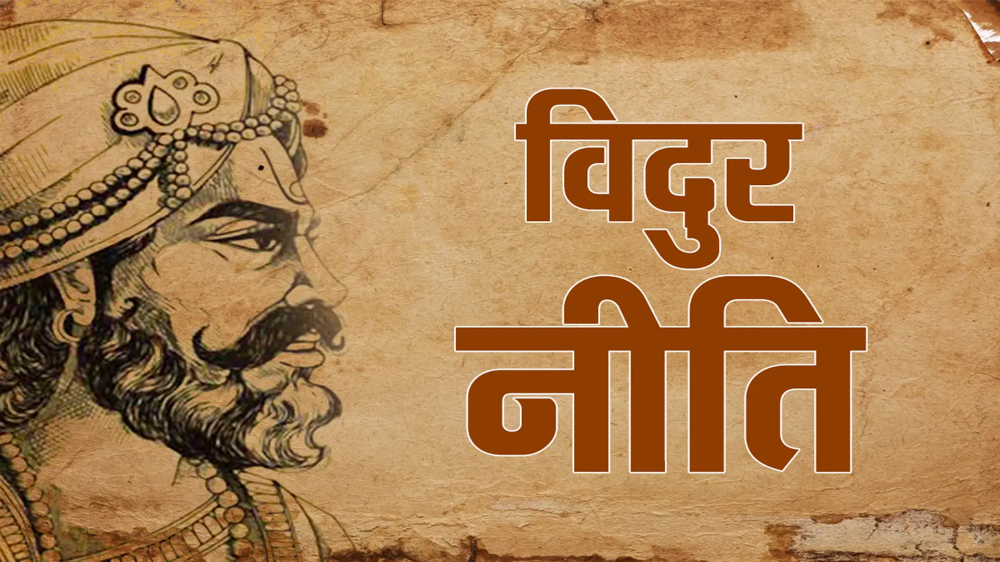
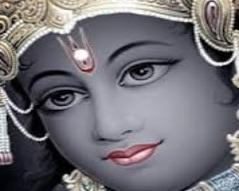
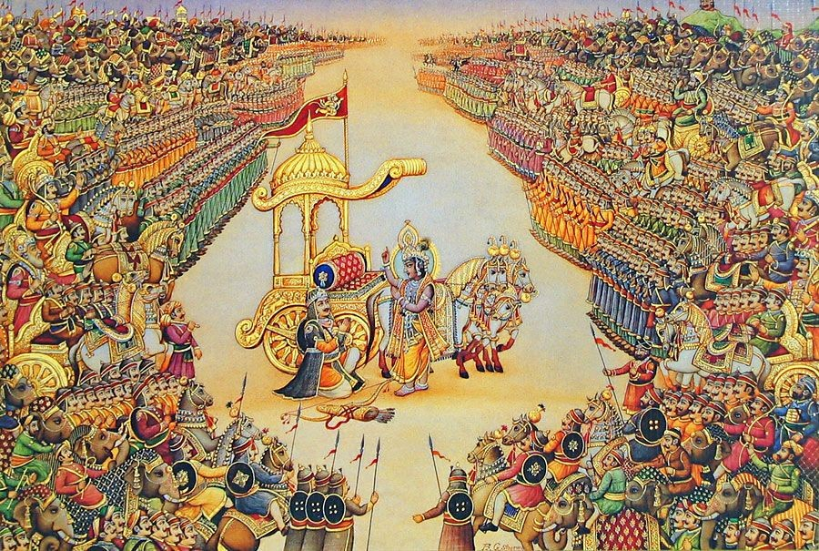

📘 अध्याय 5: उद्योग पर्व – धर्म और युद्ध का संकल्प
🔹 प्रमुख विषय:
- पांडवों की अज्ञातवास से वापसी
- संजय को शांति दूत बनाकर हस्तिनापुर भेजना
- विदुर का धर्म और नीति पर भाषण
- श्रीकृष्ण का हस्तिनापुर आगमन
- सभा में श्रीकृष्ण का विराट रूप
- दुर्योधन का अहंकार और षड्यंत्र
- कर्ण और कुंती के बीच मार्मिक संवाद
- श्रीकृष्ण द्वारा पांडवों को युद्ध का संकेत
- युद्ध की तैयारियाँ और सेना-विन्यास
📘 अध्याय ५-भाग 1
परिचय
उद्योग पर्व महाभारत में कूटनीति से युद्ध तक के संक्रमण की स्थिति को दर्शाता है। दुर्योधन के बढ़ते अहंकार और युधिष्ठिर के धर्मनिष्ठ दृढ़ता के साथ यह अध्याय उन संवादों और निर्णयों को प्रस्तुत करता है जो युद्ध की ओर ले जाते हैं।
🕊️ युधिष्ठिर का शांति प्रयास
वनवास और अज्ञातवास की समाप्ति के पश्चात युधिष्ठिर ने शांति प्रस्ताव के तहत हस्तिनापुर में दूत भेजे। विदुर ने उन्हें संयम और अहिंसा की सलाह दी। युधिष्ठिर का यह प्रयास उनके धर्म के प्रति समर्पण को दर्शाता है।
कृष्ण – एक राजदूत के रूप में

कृष्ण स्वयं शांति प्रस्ताव लेकर कौरव सभा में गए। उन्होंने पांडवों को चेताया कि शांति असफल हो सकती है, लेकिन रक्तपात से बचने का हर संभव प्रयास वे करेंगे। उनका भाषण दूरदृष्टि और नीति से परिपूर्ण था।
सनत्सुजात का दर्शन
कृष्ण के जाने से पूर्व विदुर ने सनत्सुजात मुनि का ज्ञान साझा किया। उन्होंने अज्ञानता के दुष्परिणाम, आत्मशांति का महत्व और मृत्यु के भ्रम को समझाया। यह उद्योग पर्व का दार्शनिक पक्ष है।
कृष्ण का हस्तिनापुर आगमन
कृष्ण के हस्तिनापुर आगमन पर उनका औपचारिक स्वागत हुआ। उन्होंने कुंती, विदुर और धृतराष्ट्र से भेंट की। सभा में उन्होंने न्याय और धर्म की बात रखी, लेकिन दुर्योधन ने सब अस्वीकार कर दिया।
दुर्योधन का अहंकार
दुर्योधन ने कृष्ण को बंदी बनाने की योजना बनाई। तब कृष्ण ने विराट रूप प्रकट किया जिससे सभा चकाचौंध हो गई। भीष्म, द्रोण, विदुर आदि नतमस्तक हो गए, किंतु दुर्योधन अज्ञान और अहंकार में डूबा रहा।
⚔️ युद्ध की अनिवार्यता
कृष्ण की शांति यात्रा विफल होने पर उन्होंने युद्ध की घोषणा कर दी। पांडवों ने अपनी सेनाएँ संगठित कीं और मित्र राजाओं का साथ लिया। कौरवों ने भी शक्तिशाली सहयोगी जुटाए।
कृष्ण का चुनाव
अर्जुन और दुर्योधन दोनों कृष्ण की सहायता के लिए गए। कृष्ण ने विकल्प दिया – एक ओर वे स्वयं, बिना शस्त्र के, और दूसरी ओर उनकी नारायणी सेना। दुर्योधन ने सेना चुनी, अर्जुन ने स्वयं कृष्ण को। यही निर्णय युद्ध का रुख तय करता है।
🔚 निष्कर्ष
उद्योग पर्व यह दर्शाता है कि जब धर्म संकट में हो, तब ईश्वर भी शांति प्रयासों के बाद युद्ध की स्वीकृति देते हैं। यह केवल अस्त्र-शस्त्रों का युद्ध नहीं था, बल्कि अहंकार, नीति और धर्म का संग्राम था।
📘 अध्याय ५: उद्योग पर्व – भाग २
🕊️ युधिष्ठिर द्वारा संजय को दूत बनाना
युद्ध की तैयारियाँ तेज़ी से बढ़ रही थीं, परंतु युधिष्ठिर अब भी शांति चाहते थे। उन्होंने कूटनीति में विश्वास रखते हुए धृतराष्ट्र के सारथी संजय को शांति-दूत बनाकर हस्तिनापुर भेजा। संजय एक पवित्र संदेश लेकर चले — जो धर्म, न्याय और शांति का प्रतीक था।
युधिष्ठिर का संदेश सरल था: "हम क्षमा को तैयार हैं। पूरे राज्य की नहीं, केवल पाँच ग्रामों की माँग करते हैं — प्रत्येक पांडव के लिए एक ग्राम। ऐसा युद्ध न हो जो दोनों कुलों को समाप्त कर दे।"
📜 संजय का आगमन और धृतराष्ट्र से संवाद
हस्तिनापुर पहुँचकर संजय ने सम्मानपूर्वक युधिष्ठिर का संदेश धृतराष्ट्र को सुनाया। उन्होंने अधर्म का पक्ष लेने से होने वाले विनाश के विषय में राजा को सावधान किया। धृतराष्ट्र अपने पुत्रों के प्रेम और धर्मज्ञान के बीच उलझ गए।
संजय ने दुर्योधन से भी बात की, उसे अभिमान त्यागने और राज्य पांडवों को लौटाने की सलाह दी। लेकिन दुर्योधन ने इस प्रस्ताव का उपहास किया और कहा कि पांडव तो जुए में हारे हुए हैं, उन्हें सुई की नोक जितनी भूमि भी नहीं दूँगा।
धृतराष्ट्र की दुविधा और विदुर का परामर्श
धृतराष्ट्र उलझन में थे। उन्होंने विदुर को बुलाया। विदुर ने उन्हें धर्म की याद दिलाई और राजा के कर्तव्यों को बताया — कि न्याय को अपने पुत्र से भी ऊपर रखना चाहिए। उन्होंने चेतावनी दी कि यदि दुर्योधन का अहंकार न रोका गया, तो विनाश निश्चित है।
फिर भी, धृतराष्ट्र निष्क्रिय रहे। पुत्रों के मोह ने उनकी बुद्धि पर पर्दा डाल दिया। उन्होंने कहा, “जो होना है, वही होगा” — यह उनके आत्मसमर्पण की स्वीकृति थी।
🛡️ कर्ण और कृष्ण का संवाद
कृष्ण के दूत रूप में जाने से पहले उन्होंने कर्ण से अकेले में भेंट की। कृष्ण ने कर्ण के जन्म का रहस्य बताया — कि वह सूतपुत्र नहीं, बल्कि कुंती का ज्येष्ठ पुत्र, पांडवों का सबसे बड़ा भाई है। उन्होंने कर्ण को राजगद्दी और भाइयों का प्रेम देने का प्रस्ताव रखा।
परंतु कर्ण ने उस प्रस्ताव को अस्वीकार किया। उन्होंने कहा, “मैं जानता हूँ मेरा धर्म क्या है। जिसने मुझे सम्मान दिया, जब सभी ने मुझे अपमानित किया — उसे मैं कभी नहीं त्यागूँगा। भाग्य जो भी हो, मैं उसी पथ पर चलूँगा।”
कृष्ण का हस्तिनापुर प्रस्थान
जब सभी प्रयास निष्फल हो गए, तब युधिष्ठिर ने स्वयं श्रीकृष्ण से हस्तिनापुर जाने का अनुरोध किया। श्रीकृष्ण — जो स्वयं भगवान हैं और परम नीति के ज्ञाता — ने यह अंतिम प्रयास स्वीकार किया, ताकि युद्ध से पहले शांति का पूरा प्रयत्न हो सके।
कृष्ण बिना शस्त्र के, केवल धर्म का भार उठाए, विनम्रता से हस्तिनापुर पहुँचे। सभी राजाओं और ऋषियों ने उनके आगमन को सम्मान दिया, यह आशा रखते हुए कि उनकी दिव्य प्रेरणा से शांति स्थापित हो सकेगी।
भाग २ से मुख्य शिक्षाएँ
विनाश से पहले कूटनीति: धर्मात्मा व्यक्ति संघर्ष की स्थिति में भी पहले शांति का मार्ग अपनाते हैं।
कर्ण की निष्ठा: धर्म सरल नहीं — कर्तव्य, सच्चाई और कृतज्ञता कई बार विपरीत दिशाओं में खींचते हैं।
कमजोर नेतृत्व: धृतराष्ट्र की निष्क्रियता दिखाती है कि साहसहीन नेतृत्व राष्ट्र के विनाश का कारण बनता है।
कृष्ण का दिव्य प्रयास: स्वयं भगवान भी शांति हेतु प्रयास करते हैं — यह दर्शाता है कि शांति सर्वोच्च मूल्य है।
🔚 भाग २ की समाप्ति
यह भाग समाप्त होता है कृष्ण के हस्तिनापुर प्रस्थान के साथ। जैसे तूफान से पहले की निस्तब्धता। आशा की अंतिम डोर पर सब कुछ टिका है। क्या दुर्योधन सुनेगा? या सम्पूर्ण कौरव वंश विनाश की ओर अग्रसर हो जाएगा?
🚩 उद्योग पर्व – भाग 3
श्रीकृष्ण का कौरव सभा में प्रवेश
श्रीकृष्ण शांति प्रस्ताव लेकर हस्तिनापुर पहुँचे। उनके साथ सत्यकी, विदुर और अन्य राजदूत भी थे। सभा में कौरव, भीष्म, द्रोण, कर्ण, शकुनि, कृपाचार्य आदि उपस्थित थे। कृष्ण ने बड़े शांति भाव से दुर्योधन को समझाया कि पांडवों को उनका न्यायोचित अधिकार दिया जाए। उन्होंने कहा:
“राज्य के लिए युद्ध करना दुर्भाग्यपूर्ण है। यदि थोड़े से प्रदेश में भी धर्म की स्थापना हो जाए, तो वही श्रेष्ठ है।”
परंतु दुर्योधन अडिग था। वह पांडवों को एक सुई की नोक बराबर भूमि देने को भी तैयार नहीं था। उसका उत्तर क्रोधित कर देने वाला था:
“पांडव युद्ध चाहते हैं तो युद्ध ही मिलेगा। मैं भय से राज्य नहीं दूँगा।”
दुर्योधन की धृष्टता और श्रीकृष्ण का विराट रूप
दुर्योधन ने न केवल कृष्ण की बात को ठुकराया, बल्कि उन्हें बंदी बनाने की योजना भी बनाई। यह बात सुनते ही श्रीकृष्ण मुस्कुराए और अपने विराट रूप में प्रकट हुए। उस रूप को देखकर सभा में बैठे सभी लोग अचंभित रह गए। भगवान ने दिव्य तेज से पूरी सभा को प्रकाशित कर दिया।

कर्ण और श्रीकृष्ण का गहन संवाद
इसके पश्चात श्रीकृष्ण ने कर्ण को एकांत में बुलाया। उन्होंने उसे बताया कि वह कुंतीपुत्र है, पांडवों का ज्येष्ठ भ्राता है, और धर्म की रक्षा करना उसका कर्तव्य है। उन्होंने कर्ण से पांडवों का साथ देने का आग्रह किया और वचन दिया कि युधिष्ठिर कर्ण को राजा बनाएंगे।
“हे वसुसेन! तुम धर्म की संतान हो। धर्म का साथ दो, अन्यथा यह युद्ध संसार को विध्वंस में डाल देगा।”
कर्ण ने विनम्रता से कृष्ण के प्रस्ताव को अस्वीकार कर दिया। उसने कहा कि वह दुर्योधन का मित्र है, और उसके नमक का कर्जदार है। वह पांडवों के विरुद्ध युद्ध करेगा, भले ही हार निश्चित हो।
भीष्म और द्रोण की विवशता
कृष्ण ने भीष्म और द्रोण से भी बात की, पर वे राज्य के प्रति अपनी निष्ठा को त्याग नहीं सके। वे जानते थे कि पांडव धर्म के पथ पर हैं, किंतु हस्तिनापुर के प्रति उनका कर्तव्य उन्हें दुर्योधन की सेना में खड़ा करता था।
भीष्म ने कहा:
“मैं राज्य का सेनापति हूँ, मेरे हाथ बँधे हैं। किंतु युद्ध में मैं अधर्म का समर्थन नहीं करूँगा।”
कृष्ण की हस्तिनापुर से विदाई
अंत में, जब सभी प्रयास विफल हो गए, श्रीकृष्ण ने शांति प्रस्ताव वापस ले लिया। उन्होंने सभा में घोषणा की:
“अब धर्म और अधर्म के मध्य युद्ध निश्चित है। मैं युद्ध में अर्जुन का सारथी बनकर धर्म की रक्षा करूँगा।”
imकृष्ण का पांडवों से संवाद
हस्तिनापुर से लौटने के बाद कृष्ण ने पांडवों को पूरी स्थिति बताई। उन्होंने कहा कि अब युद्ध को कोई नहीं रोक सकता। युधिष्ठिर ने एक बार फिर अंतिम प्रयास किया, किंतु सभी दरवाजे बंद हो चुके थे।
कुंती और कर्ण का हृदयस्पर्शी मिलन
इस संकटपूर्ण समय में कुंती ने कर्ण से मिलकर उसे सच्चाई बताई — कि वह उसका पुत्र है। कुंती ने उससे युद्ध में पांडवों को न मारने का वचन माँगा। कर्ण ने माँ को यह वचन दिया कि वह अर्जुन के सिवाय किसी को नहीं मारेगा, और वह भी अगर अर्जुन उसे न मारे।
“माँ, मैं वचन देता हूँ कि तुम पाँच पुत्रों की माता ही रहोगी – या तो मैं जीवित रहूँगा, या अर्जुन।”
युद्ध की घोषणा
सभी प्रयास निष्फल होने के बाद, धर्म और अधर्म के बीच का युद्ध अब निश्चित था। श्रीकृष्ण, भीम, अर्जुन, नकुल, सहदेव और युधिष्ठिर ने धर्म की रक्षा का संकल्प लिया। उद्योग पर्व यहीं समाप्त होता है, और महाभारत का सबसे रक्तरंजित अध्याय — भीष्म पर्व आरंभ होता है।
🔚 निष्कर्ष:
यह अध्याय महाभारत की कथा को निर्णायक मोड़ पर पहुँचाता है, जहाँ न्याय और अन्याय, शांति और युद्ध के बीच अंतिम निर्णय लिया जाता है। श्रीकृष्ण का विराट रूप दर्शाता है कि धर्म की रक्षा के लिए शांतिदूत भी यथासमय योद्धा बन सकता है। यह पर्व हमें सिखाता है कि जब सभी शांति प्रयास विफल हो जाएँ, तब धर्म के लिए युद्ध भी आवश्यक हो जाता है।